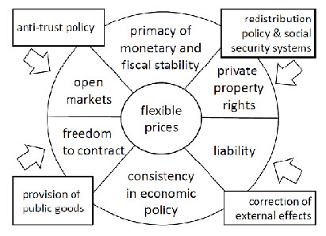

返回主页
奥尔多（Ordo）竞争秩序

瓦尔特・欧肯(Walter Eucken，1891－1950)的“秩序”（Ordnung）概念。 秩序指有一定规则的安排。
Eucken区分两种秩序：
其一为“经济秩序”（Wirtschaftsordnung），是指历史上各种个别的、不断变化的、具体的、现实存在的事实秩序，是人们事实上生活于其中的可能不令人满意的各种秩序；
二为“经济的秩序”（Ordnung der Wirtschaft），亦即“奥尔多秩序”（Ordo），是“合乎人和事物的本质的秩序。它是一种其中存在着度和均衡的秩序”。
对于Eucken，“奥尔多秩序”也是“有运行能力的、合乎人的尊严的、持久的秩序”，是一种有用的，公平的秩序。 它也是一种规范性的秩序，值得人们去争取。
精英阶层如何主宰民选政府
政治的逻辑
version:1.0; jobnet@188.com © retter2012.com